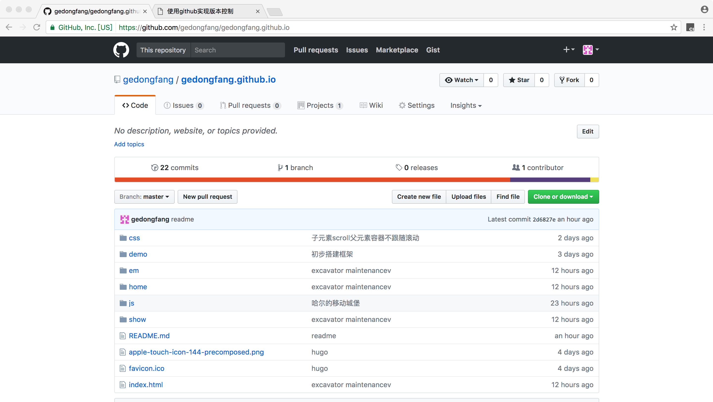

使用github实现版本控制
打上王者后觉得农药玩腻了，再加上最近被经理拉来做前端，就计划认真看看前端的东西。于是拿姜山的代码做了这个博客，看一看人家具体是怎么实现的。
又刚好准备给一个非计算机相关专业的朋友介绍如何用github来做文章的版本控制，干脆写一篇博客放上来试试。
介绍
你在写论文、小说或者其他什么的东西的时候，第一天写了王尔德对萨冈产生了哪些影响，第二天觉得太幼稚了改成卡尔维诺对王小波的影响，第三天觉得还是萨冈更可爱一点，想改回去，怎么办？
如果你写的文章是放在github上的话，遇到这种问题就可以通过查看第一天的历史提交记录来恢复到当时的版本，或者在第一天的历史记录节点创建新的分支（命运石之门？）
上手
首先去github.com官网注册，然后到desktop.github.com下载客户端(不行的话试试这个)，打开客户端，登录。
选择左上角的加号，填上自己喜欢的名字和路径，create a new repository
去路径下新建一个文本文件（是自己到路径下手动添加文件，不是在客户端内添加），写入一些内容，保存后回到客户端，在Changes里面可以看到我们新建的文件以及添加的内容，在左下角填上关于这次提交的Summary与Description，点击Commit to master，再点击右上角Publish 这样，你在github上的repositories里面就会出现这个新添加的项目。如果你继续修改文件内容并保存，或者在路径下面添加了新文件（什么类型的文件都可以，可以当成一个性能不怎么样的网盘）的话，可以到客户端的Changes下面重复刚才的commit操作，区别就是Publish变成了Sync
最后，我们回到github.com上看看 在右下角找到新提交的repositories，可以看到提交上来的各种文件  点击commits，可以查看历史提交记录 点击每条记录最后面的 < > 按钮，就可以查看那条记录对应的日期下所有文件的内容
结语
学会提交以及查看历史提交记录，就已经可以初步用github来对自己的文章、图片、文件进行版本控制了，知乎上关于github的用途用法有更加详细的讨论。
私の戦场はここじゃない